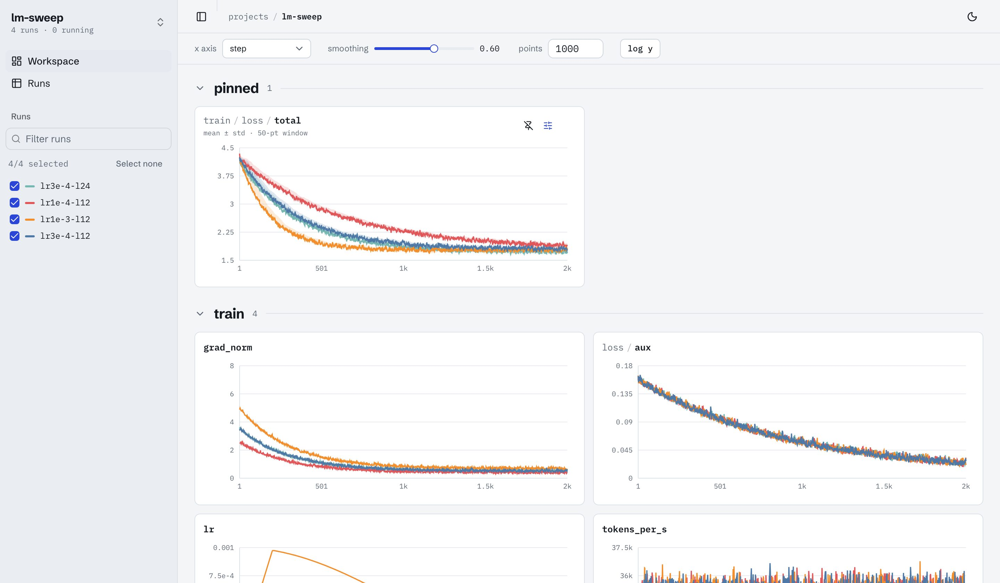

Your trackio runs, charted like wandb. On your machine.
log-ui is a read-only dashboard for experiments logged with trackio. Point it at a store and compare runs: grouped charts, smoothing, spread bands, a runs table that shows which configs differ. One Python process, no accounts, no cloud.
$ uv tool install git+https://github.com/AadityaSalgarkar/log-ui $ log-ui --open
Or try the demo in a sandbox: docker run --rm -p 127.0.0.1:8765:8765 ghcr.io/aadityasalgarkar/log-ui, read-only, as an unprivileged user on Alpine. Docker →

scripts/demo_store.py: the training loss is pinned and shows a 50-point mean ± std band.log-ui/features
- Every key, nested
- Each logged key gets a chart, nested by its path in collapsible groups:
loss / train / xentsits in a "train" box inside "loss". - Smoothing, axes, budget
- EMA smoothing, step, relative or wall-clock x, log y, and how many points each series draws.
- Spread bands
- Mean ± std or min–max over a trailing window of N raw points. It never looks ahead.
- Per-chart limits
- Pin x and y ranges on any chart; expand any chart to full screen with a range brush.
- Runs that differ
- The runs table shows only the config columns that vary across runs, so sweeps read at a glance.
- Views as plugins
- Ladders, heatmaps and tables declared in Python for comparisons wandb needs custom panels for.
log-ui/contract
Read-only, through one fixed contract.
log-ui never imports trackio and never writes to its store. Everything it reads goes through log_ui/contract.py, which declares the files, tables and columns it uses and the trackio versions it is verified against.
Each sqlite connection opens with mode=ro and checks the schema first. A store that drifted gets a clear unsupported trackio store error, never a silently wrong chart.
# log_ui/contract.py
TRACKIO_VERSIONS = ">=0.38,<0.40"
SCHEMA = {
"configs": ("id", "run_id", "run_name",
"config", "created_at"),
"metrics": ("id", "run_id", "run_name",
"step", "timestamp", "metrics"),
"system_metrics": ("id", "run_id", "run_name",
"timestamp", "metrics"),
}
log-ui/docker
Try it without trusting it.
With no store mounted the container serves a bundled demo. Mount yours read-only and it still cannot write anywhere but an in-memory /tmp.
The prebuilt image carries signed build provenance: gh attestation verify proves CI built it from this repository. Or skip the registry and build it from source in one command.
The image is Alpine plus a Python virtualenv: no compilers, no Node. It always runs as an unprivileged user (uid 10001); the flags shown (the defaults in compose.yaml) also make the filesystem immutable and drop every Linux capability. The port is published on localhost only.
# bundled demo docker run --rm -p 127.0.0.1:8765:8765 \ ghcr.io/aadityasalgarkar/log-ui # your runs, read-only docker run --rm -p 127.0.0.1:8765:8765 \ -v ~/.cache/huggingface/trackio:/data:ro \ --read-only --tmpfs /tmp \ --cap-drop ALL \ --security-opt no-new-privileges \ ghcr.io/aadityasalgarkar/log-ui # verify provenance, or build from source gh attestation verify \ oci://ghcr.io/aadityasalgarkar/log-ui:latest \ --owner AadityaSalgarkar docker build -t log-ui \ https://github.com/AadityaSalgarkar/log-ui.git
log-ui/configure
| Flag | Environment | Default |
|---|---|---|
--dir | LOG_UI_DIR, then TRACKIO_DIR | ~/.cache/huggingface/trackio |
--port | LOG_UI_PORT | 8765 |
--host | LOG_UI_HOST | 127.0.0.1 |
--project | LOG_UI_PROJECT | the project list |
--views module:function | LOG_UI_VIEWS | entry points in log_ui.views |
--stale-seconds | 120 |
On a remote box, keep the default localhost bind and forward the port: ssh -L 8765:localhost:8765 box. The JSON API is documented at /docs on a running server.